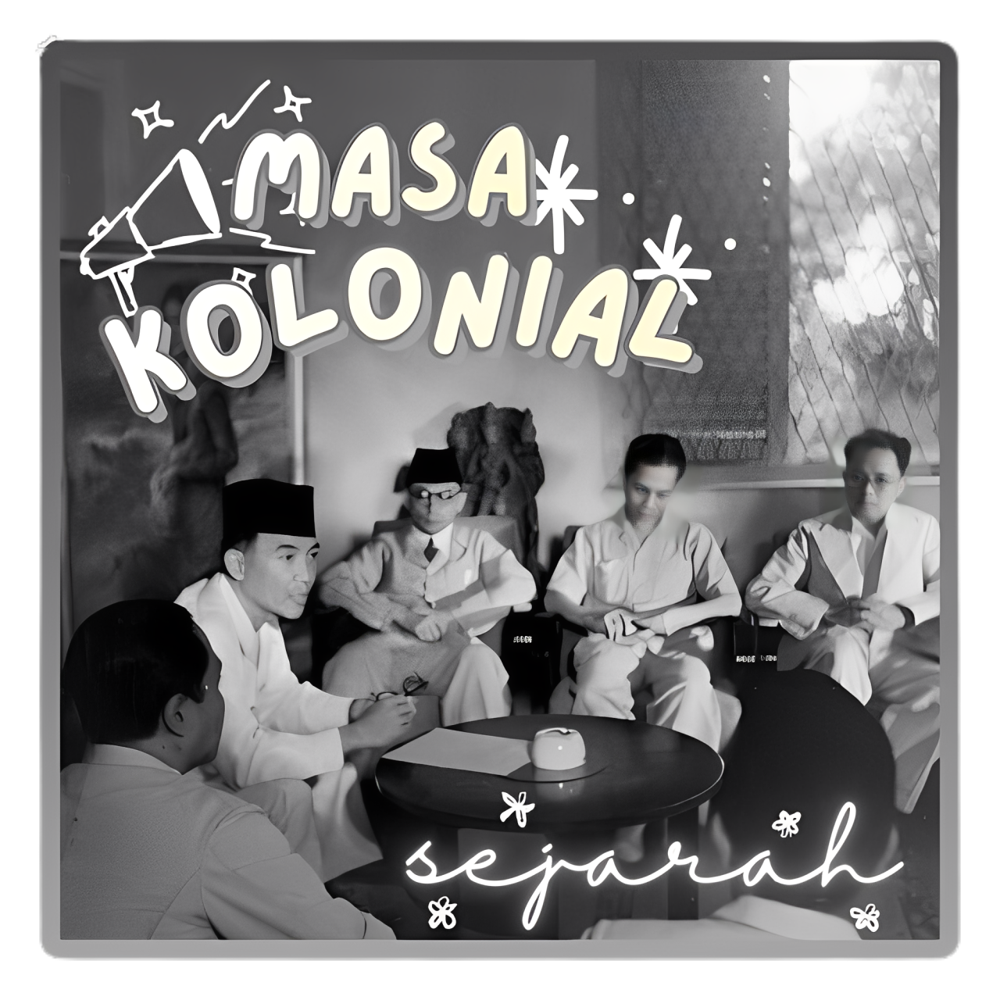
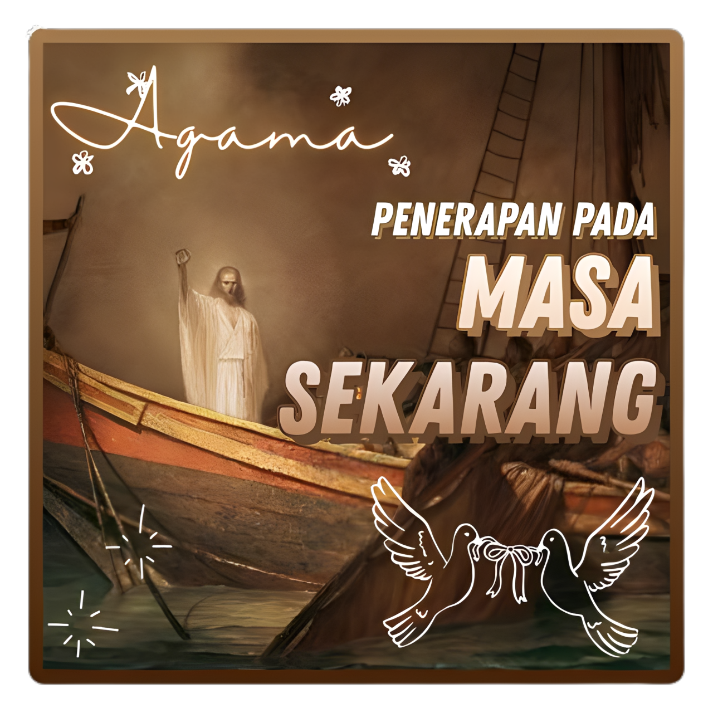

SAS
Daftar Pustaka dan Informasi
Browser kamu tidak mendukung video tag.
"Kepadatan penduduk yang tidak merata akan menciptakan kesenjangan, di mana kota-kota besar menumpuk kekayaan, sementara wilayah lain justru kekurangan."

Sejarah
PPKN

Agama
PKWU